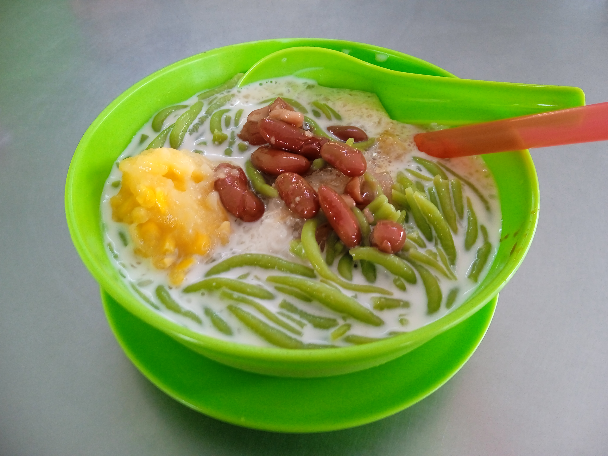

Es Cendol Recipes

About Es Cendol
Es Cendol is a refreshing traditional Indonesian drink, made from cendol (green jelly from rice flour and pandan leaves), coconut milk, and liquid palm sugar. This beverage is very popular, especially in the regions of Java and Sumatra.
Main Ingredients
- 200 grams rice flour
- 50 grams mung bean starch (Hunkwe flour)
- 1 pandan leaf water (made from 5-6 pandan leaves blended with 500 ml water)
- 200 grams palm sugar, finely grated
- 500 ml thick coconut milk (from 1 whole coconut)
- Ice cubes, to taste
- A pinch of salt
How to Make it
- Mix the rice flour and mung bean starch in a bowl. Gradually add the pandan leaf water while stirring until the batter is well mixed and smooth (not lumpy).
- Cook the batter over medium heat, stirring constantly until it thickens and is cooked through. Remove from heat and let it cool slightly.
- Prepare a cendol mold or a perforated strainer. Pour the batter into the mold and press it so the cendol comes out and drops into a bowl filled with ice water. Let the cendol harden, then drain.
- To make the liquid palm sugar, dissolve the grated palm sugar with a little water over low heat until the sugar is completely dissolved. Strain to remove impurities, then let it cool.
- Mix the coconut milk with a pinch of salt, stirring well. Heat briefly until it boils, then remove and let it cool.
- Serve the Es Cendol by mixing the cendol, liquid palm sugar, coconut milk, and ice cubes, according to taste.